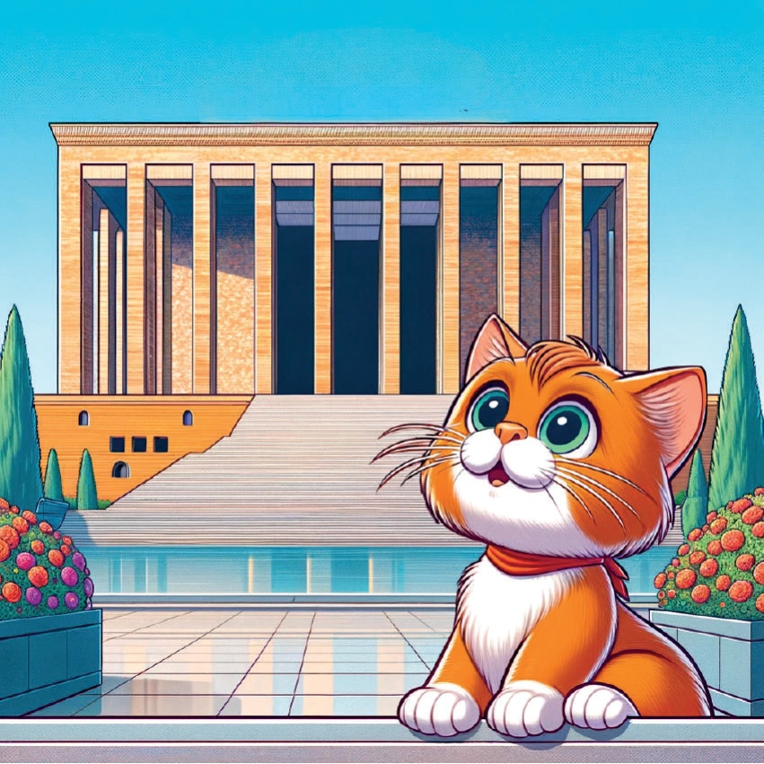
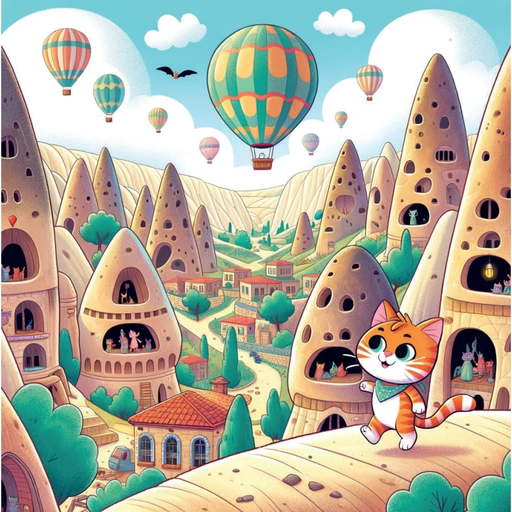
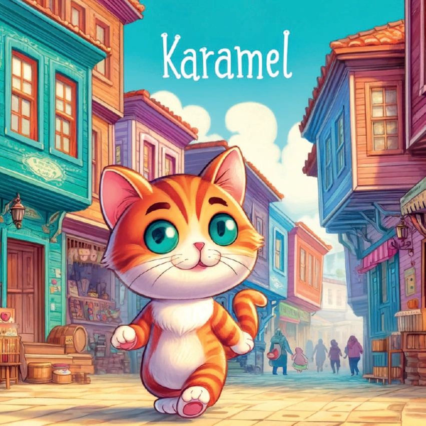
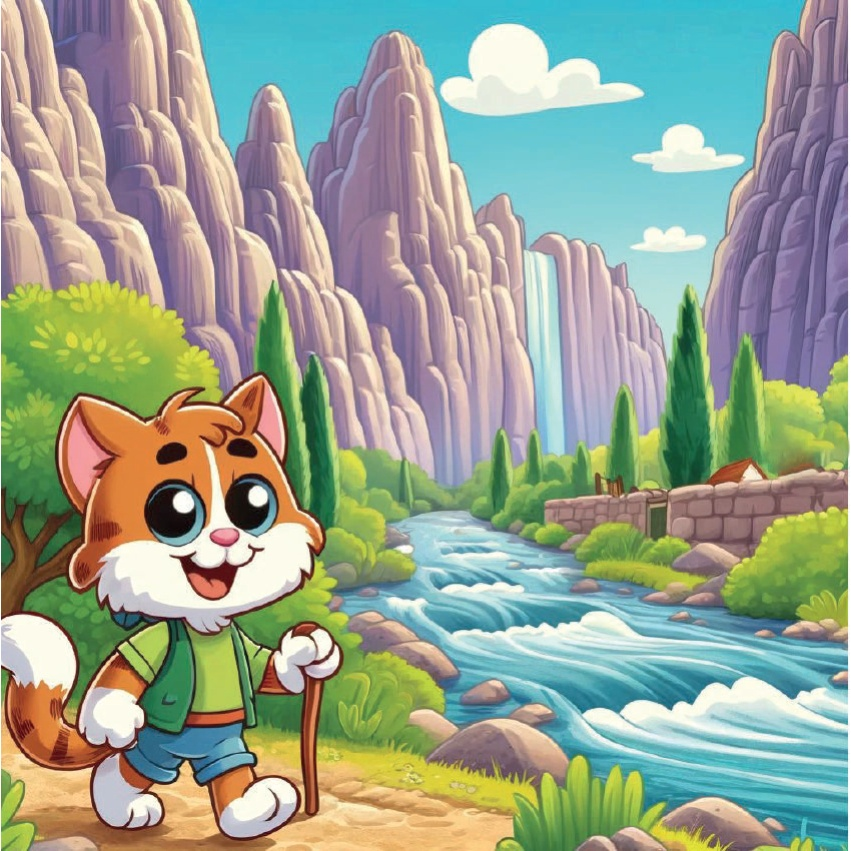

Once upon a time, there was a curious little cat named Karamel who loved exploring different regions. One day, she decided to travel across the Central Anatolia Region in Turkey to learn about its unique culture, history, and natural beauty.
4
5
Ankara:
Anıtkabir
Karamel’s first stop was Ankara,
where she visited Atatürk’s Mausoleum.
The grand structure and the significance of the site left her feeling inspired.
6

7
Cappadocia:
Fairy Chimneys
Next, Karamel traveled to Cappadocia,
where she marveled at the unique fairy chimneys.
The otherworldly landscape and hot air balloons were
a sight to behold.
8

9
Konya:
Mevlana Museum
In Konya, Karim visited
the Mevlana Museum.
The beautiful building
and the story of Rumi
and the Whirling Dervishes
fascinated her.
10
11
Kayseri:
Mount Erciyes
Then she traveled to Kayseri,
where she saw the magnificent Mount Erciyes.
The snow-covered peak and the possibility of skiing excited her.
12
13
Eszüge:
Odunpazarı
In Esşehir, Karamel explored the charming district of Odunpazarı.
The colourful houses and lively atmosphere made her feel welcome.
14

15
Sivas:
Divriği Great Mosque
Karamel’s next stop was Sivas,
where she visited the Divriği Great Mosque.
The intricate carvings and historical significance of the mosque impressed her.
16
17
Aksaray:
The Ihlara Valley.
In Aksaray, Karamel hiked through
the beautiful Ihlara Valley.
The lush greenery and the river flowing
through the valley were breathtaking.
18

19
With her heart full of new experiences and memories, Karamel realized how diverse and fascinating the Central Anatolian Region is. She returned home, dreaming of her next adventure.